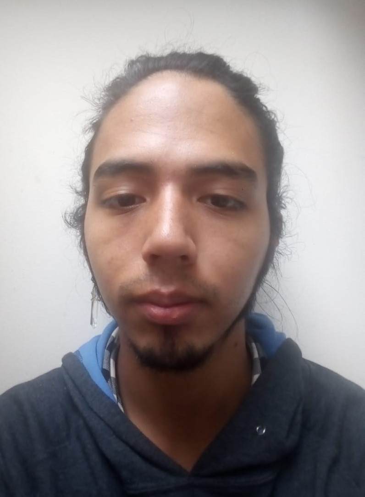

Información personal
Soy una persona muy capaz y de buen entendimiento, me caracterizo por buscar realizar las cosas de la forma más óptima, ya sea estudio, hobbies o trabajo.
Como todos, tengo aspectos en los qué mejorar, pero siempre miro el lado bueno de las cosas así el resultado obtenido no sea el mejor en algunas ocasiones.
En lo que mejor más destaco es en que puedo trabajar en equipo sin problema y siempre quiero ayudar a mis compañeros.
Los idiomas que hablo son:
- Inglés: Comprendo bien el Inglés y puedo leerlo y escribirlo sin problema.
- Español: Es mi lengua materna y tengo un excelente manejo de las palabras y buena ortografía.